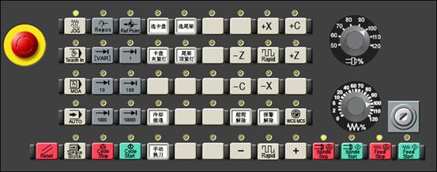
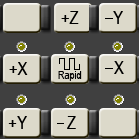
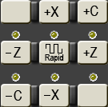
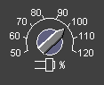
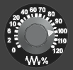

SIEMENS 810D 机床操作面板
机床操作面板位于窗口的右下侧，如下图所示。主要用于控制机床的运动和选择机床运行状态，由模式选择按钮、数控程序运行控制开关等多个部分组成，每一部分的详细说明如下：

8 10 D 铣床面板

8 10 车床面板
置光标于键上，点击鼠标左键，选择模式。
MDA 用于直接通过操作面板输入数控程序和编辑程序
AUTO 进入自动加工模式
JOG 手动模式 , 手动连续移动各轴
REF 回参考点模式
VAR ��量选择
SINGL 自动加工模式中，单步运行
SPINSTAR 主轴正转
SPINSTAR 主轴反转
SPINSTP 主轴停止
RESET 复位键
CYCLESTAR 循环启动
CYCLESTOP 循环停止
RAPID 快速移动

方向键 : 选择要移动的轴。 (SIEMENS 810D 铣床 )
方向键 : 选择要移动的轴。 (SIEMENS 810D 车床 )紧急停止旋钮

主轴速度调节旋钮
进给速度（ F ）调节旋钮